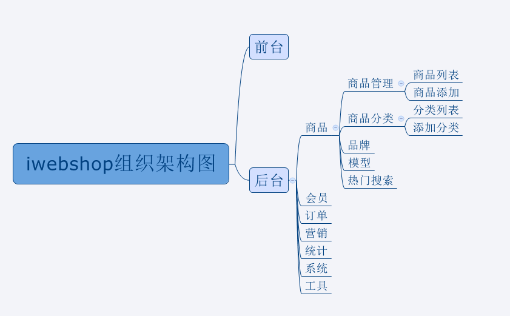
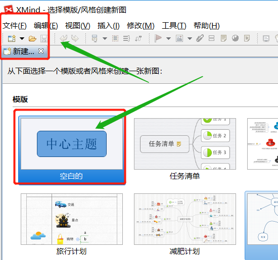
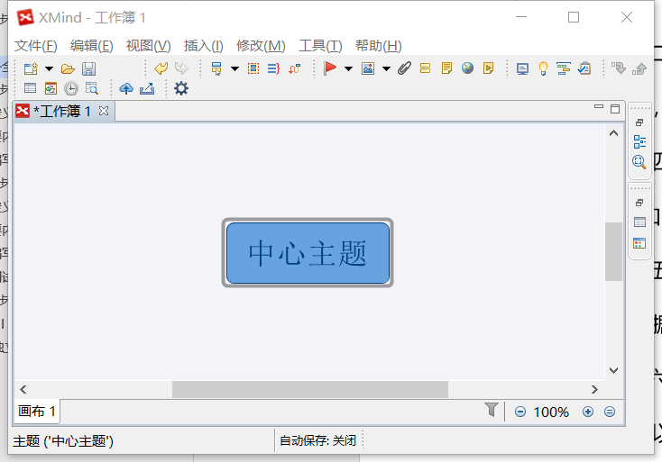
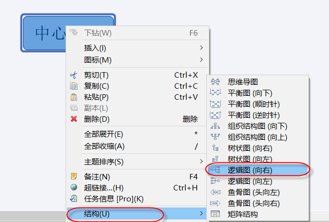
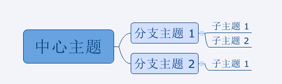
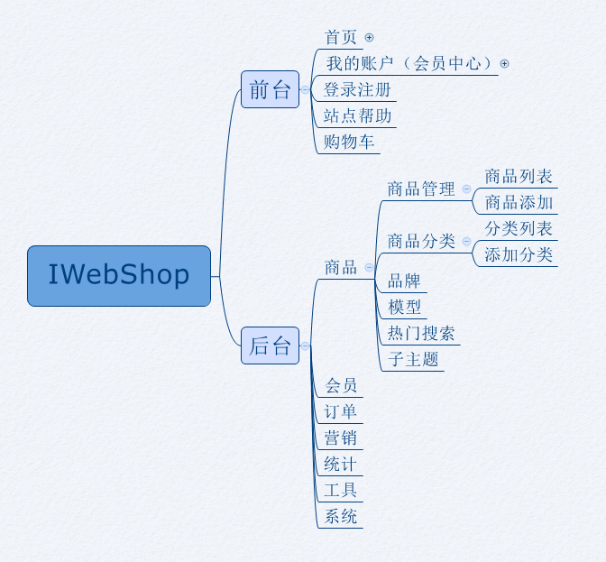

项目组织架构图
组织架构图
项目组织架构图反映的是一个项目组织系统中各子系统之间和各元素之间的组织关系，反映的是各个模块以及各个模块下面的子模块，子模块下面的子模块之间的组织关系。
价值
通过画项目组织架构图，对所要测试的项目的【功能模块】有一个全局性的认识。步骤
1.先确定项目有几个子系统 2.每个子系统有哪些一级模块 3.每个一级模块又有哪些二级模块 …… 直到所有模块全部画完注意：项目组织架构图不涉及具体的功能

成果物
补充---使用Xmind画组织架构图步骤
- 第一步，双击打开XMind软件，新建空白图，如下图所示：

- 第二步，自动生成“无标题”带有“中心主题”的画布，放置在中心位置，如下图所示：

- 第三步，右键单击“中心主题”，在“结构”中选择“逻辑图（向右）”，如下图所示：

- 第四步，双击修改“中心主题”，并可通过Tab键添加分支主题和子主题，通过Enter添加兄弟主题；

- 第五步，修改主题上的描述，这里根据iwebshop来修改参照，根据每个模块的功能进行展示，如下图所示：

- 第六步，可以根据个人需要修改画布墙纸和背景色，调节样式等。